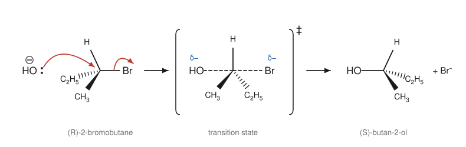
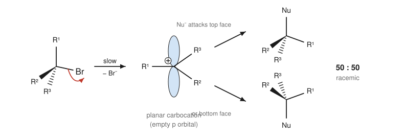
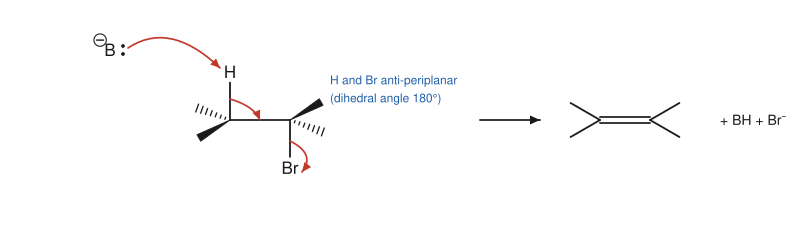

Chapter 9: Alkyl Halides: Substitution and Elimination¶
SN2, SN1, E2 and E1, and how to choose between them
A carbon bonded to a halogen is electron-poor, and the halogen can leave as a stable halide ion. This makes haloalkanes (alkyl halides) the textbook case of an electrophile, and their reactions are the model for a vast range of organic chemistry. A nucleophile can replace the halogen (substitution), or a base can remove a neighbouring hydrogen so that the halogen leaves and a double bond forms (elimination). Each process can happen in one step or two. Learning which of the four resulting mechanisms (SN2, SN1, E2, E1) operates in a given case, and why, is one of the central skills of a first course.
Learning outcomes
By the end of this chapter you should be able to:
- describe the structure and properties of haloalkanes and why the C–X carbon is electrophilic;
- write the SN2 mechanism, its rate law and its stereochemistry (inversion), and explain the effects of substrate, nucleophile, leaving group and solvent;
- write the SN1 mechanism, its rate law and its stereochemistry (racemisation), and explain why tertiary substrates react this way;
- write the E2 mechanism, explain the anti-periplanar requirement and predict Zaitsev and Hofmann products;
- describe the E1 mechanism and its competition with SN1;
- predict the main mechanism and product for a given haloalkane, reagent and solvent.
9.1 Haloalkanes¶
Haloalkanes contain a halogen atom (F, Cl, Br or I) bonded to an sp³ carbon. They are classified as primary, secondary or tertiary according to the carbon that carries the halogen (Section 2.1). Halogens bonded to sp² carbons, as in chlorobenzene or chloroethene, behave very differently and do not undergo the reactions of this chapter under normal conditions.
The C–X bond is polar, with carbon δ+. Going down the group, the bond becomes longer and weaker:
| Bond | Length (pm) | Bond energy (kJ mol⁻¹) |
|---|---|---|
| C–F | 139 | about 485 |
| C–Cl | 178 | about 340 |
| C–Br | 193 | about 285 |
| C–I | 214 | about 215 |
Table 9.1. Carbon–halogen bonds in halomethanes (approximate values).
The weaker the bond, and the more stable the halide ion, the better the halogen leaves. Iodoalkanes react fastest, then bromoalkanes and chloroalkanes; fluoroalkanes hardly react at all.
Haloalkanes are made from alkenes (Chapter 7), from alcohols (Chapter 10) and by radical halogenation of alkanes (Chapter 6). They are useful solvents and synthetic intermediates. Some have caused environmental harm: chlorofluorocarbons (CFCs), once used as refrigerants and aerosol propellants, release chlorine atoms in the stratosphere that destroy ozone, and their production has been phased out under the Montreal Protocol of 1987.
Example 9.1: A practical test for haloalkanes
When a haloalkane is warmed with aqueous ethanolic silver nitrate, water slowly substitutes the halogen, and the halide ion released precipitates as a silver halide: AgCl (white), AgBr (cream) or AgI (yellow). Precipitates appear fastest for iodoalkanes and slowest for chloroalkanes, showing the order of C–X bond strength. Tertiary haloalkanes react faster than primary ones, for reasons explained in Section 9.3.
9.2 The SN2 reaction¶
Hydroxide ion reacts with bromomethane to give methanol:
Experiment shows that the rate is proportional to the concentrations of both reactants:
Both species must therefore be involved in the rate-determining step. The mechanism is a single, concerted step called SN2: Substitution, Nucleophilic, bimolecular (two species in the rate-determining step).
The mechanism¶
The nucleophile approaches the carbon from the side directly opposite the leaving group (backside attack). As the new Nu–C bond forms, the C–X bond breaks. In the transition state the carbon is partly bonded to both, with the three other groups lying flat in a plane, like an umbrella caught halfway in a gust of wind. As the leaving group departs, the three groups flip over to the other side.

The result is inversion of configuration (the Walden inversion): if the substrate is a single enantiomer, the product is a single enantiomer with the opposite spatial arrangement. In Figure 9.1, (R)-2-bromobutane gives (S)-butan-2-ol. (Here the letter changes from R to S because OH takes over bromine's place at the top of the priority order, so the inverted geometry receives the opposite label. If a nucleophile changed the order of priorities, the letter could stay the same even though the geometry is inverted: the real test is the geometry, not the letter.)
What controls the rate of SN2?¶
1. The substrate. Backside attack is blocked by bulky groups around the carbon. The rate falls steeply with substitution:
Tertiary haloalkanes do not react by SN2 at all, because the three alkyl groups shield the back of the carbon. Even branching one carbon further away slows the reaction: 1-bromo-2,2-dimethylpropane (neopentyl bromide), although primary, reacts extremely slowly.
2. The nucleophile. Stronger nucleophiles react faster. Negatively charged nucleophiles are stronger than their neutral conjugate acids (HO⁻ > H₂O, CH₃O⁻ > CH₃OH). Useful SN2 nucleophiles include HO⁻, RO⁻, CN⁻, I⁻, N₃⁻, RS⁻, NH₃, amines and acetylide ions, each giving a different family of product.
3. The leaving group. The best leaving groups are weak bases, the conjugate bases of strong acids: I⁻ > Br⁻ > Cl⁻ >> F⁻. Hydroxide (from water, pKa 15.7) is a very poor leaving group, which is why alcohols do not undergo SN2 directly. They must first be converted into a better leaving group, by protonation (–OH₂⁺ leaves as water) or by conversion into a sulfonate ester such as a tosylate (Chapter 10).
4. The solvent. SN2 reactions with anionic nucleophiles are fastest in polar aprotic solvents, such as propanone, dimethyl sulfoxide (DMSO) and N,N-dimethylmethanamide (DMF). These dissolve ionic reagents by solvating the cation, but leave the anion relatively free and reactive. Polar protic solvents (water, alcohols) surround anions with hydrogen bonds, which stabilises them and makes them less reactive. In protic solvents, small anions such as F⁻ are held most strongly, so nucleophilicity runs I⁻ > Br⁻ > Cl⁻ > F⁻.
Key idea
SN2: one step, rate depends on substrate and nucleophile, backside attack, inversion of configuration. Favoured by methyl and primary substrates, strong nucleophiles, good leaving groups and polar aprotic solvents.
Example 9.2: Products of SN2 reactions
Give the products of 1-bromobutane with (a) NaCN in DMSO; (b) NaI in propanone; (c) CH₃CH₂ONa in ethanol (a substitution product only).
(a) CH₃CH₂CH₂CH₂CN, pentanenitrile: a new C–C bond, lengthening the chain by one carbon. (b) 1-iodobutane. In propanone, NaI is soluble but NaBr is not; NaBr precipitates and drives the reaction forward (the Finkelstein reaction). (c) CH₃CH₂CH₂CH₂OCH₂CH₃, 1-ethoxybutane, an ether (the Williamson ether synthesis, Chapter 10).
9.3 The SN1 reaction¶
2-Bromo-2-methylpropane, a tertiary haloalkane, reacts with water quickly even though water is a poor nucleophile, and the rate does not depend on the concentration of the nucleophile:
Only the haloalkane is involved in the rate-determining step. The mechanism, SN1 (unimolecular), has two main steps:
- Ionisation (slow). The C–Br bond breaks heterolytically, giving a carbocation and a bromide ion.
- Nucleophilic attack (fast). The nucleophile (here water) attacks the carbocation. When the nucleophile is neutral, a final fast proton transfer gives the neutral product.
You have already met this sequence as the example of Figure 5.2.
Stereochemistry: racemisation¶
The carbocation is planar (sp²), with an empty p orbital on each face. The nucleophile can attack from either face with nearly equal probability. If the carbon was a stereocentre, both configurations of the product form: a single enantiomer of substrate gives a racemic (or nearly racemic) product. In practice a slight excess of the inverted product is often found, because the departing halide ion briefly shields the face it left.

What controls the rate of SN1?¶
1. The substrate. The rate depends on how easily the carbocation forms, which follows carbocation stability (Section 5.6):
Allylic and benzylic halides also react readily by SN1, because their carbocations are stabilised by resonance.
2. The leaving group. As for SN2: I⁻ > Br⁻ > Cl⁻.
3. The solvent. Polar protic solvents (water, alcohols, methanoic acid) strongly favour SN1. They stabilise both the carbocation and the leaving anion by solvation, and so lower the energy of the transition state of the ionisation step. A reaction in which the solvent is also the nucleophile is called solvolysis.
4. The nucleophile does not affect the rate, because it is not involved in the rate-determining step. Weak, neutral nucleophiles (water, alcohols) are typical of SN1 conditions.
Because a carbocation is formed, rearrangements can occur in SN1 reactions, just as in additions to alkenes.
| Feature | SN2 | SN1 |
|---|---|---|
| Steps | one (concerted) | two (via carbocation) |
| Rate law | k[RX][Nu] | k[RX] |
| Substrate | methyl > 1° > 2°; not 3° | 3° > 2°; not 1° or methyl (except allylic, benzylic) |
| Nucleophile | strong, often anionic | weak, often neutral (solvent) |
| Solvent | polar aprotic best | polar protic |
| Stereochemistry | inversion | racemisation |
| Rearrangements | no | possible |
Table 9.2. A comparison of SN2 and SN1.
9.4 The E2 reaction¶
When 2-bromopropane is heated with a strong base such as sodium ethoxide in ethanol, the main product is propene, not an ether. The base has removed a proton from the carbon next to the C–Br carbon (the β-carbon), and HBr has been lost: an elimination. The rate depends on both the haloalkane and the base:
This is the E2 mechanism (Elimination, bimolecular). It happens in one concerted step, with three arrows:
- the base takes a β-hydrogen;
- the C–H bonding pair moves in to form the C=C π bond;
- the C–X bond breaks, and the halide leaves with its electron pair.
The anti-periplanar requirement¶
For the C–H bonding electrons to flow smoothly into the forming π bond and push out the leaving group, the H and the leaving group must lie in the same plane and on opposite sides of the C–C bond, with a dihedral angle of 180°. This arrangement is called anti-periplanar. It corresponds to the staggered, anti conformation of Section 6.3.

The anti-periplanar requirement makes E2 reactions stereospecific. In cyclohexanes it means that both the H and the leaving group must be axial (one up, one down), because only then are they anti-periplanar. A cyclohexyl halide whose halogen is held equatorial (for example by a tert-butyl group elsewhere on the ring) eliminates very slowly.
Regiochemistry: Zaitsev and Hofmann¶
When a haloalkane has more than one kind of β-hydrogen, different alkenes can form. With small, strong bases (HO⁻, CH₃O⁻, CH₃CH₂O⁻), the more substituted, more stable alkene usually predominates. This is Zaitsev's rule (also spelled Saytzeff). 2-Bromobutane with ethoxide gives mainly but-2-ene (with the trans isomer in excess) and less but-1-ene.
With a bulky base, such as potassium tert-butoxide, (CH₃)₃CO⁻ K⁺, the less hindered hydrogens on the end carbon are removed more easily, and the less substituted alkene predominates. This is called the Hofmann product. 2-Bromo-2-methylbutane with tert-butoxide gives mainly 2-methylbut-1-ene, whereas with ethoxide it gives mainly 2-methylbut-2-ene.
Example 9.3: Predicting E2 products
Predict the main product of 2-bromo-2-methylbutane, (CH₃)₂CBrCH₂CH₃, with (a) NaOCH₂CH₃ in ethanol, heated; (b) KOC(CH₃)₃ in 2-methylpropan-2-ol.
The β-carbons are the two methyl groups (six equivalent H) and the CH₂ (two H).
(a) A small base gives the Zaitsev product: removing H from CH₂ gives the trisubstituted alkene 2-methylbut-2-ene, (CH₃)₂C=CHCH₃.
(b) A bulky base removes the more accessible methyl hydrogens, giving the disubstituted Hofmann product 2-methylbut-1-ene, CH₂=C(CH₃)CH₂CH₃.
9.5 The E1 reaction¶
Tertiary and secondary haloalkanes in polar protic solvents can also eliminate through a carbocation. In the E1 mechanism (unimolecular), the first step is the same slow ionisation as in SN1. Then, instead of being attacked by a nucleophile, the carbocation loses a proton from a neighbouring carbon to a weak base (often the solvent), forming the alkene. The rate law is rate = k[RX].
E1 and SN1 share their first step and always compete. Heating favours elimination, because elimination produces more molecules than substitution and so has a more favourable entropy change. E1 reactions follow Zaitsev's rule, giving mainly the more stable alkene, and can involve rearrangements. They are not stereospecific, because the carbocation can lose any suitable β-hydrogen.
The acid-catalysed dehydration of alcohols (Chapter 10) is a typical E1 reaction.
9.6 Substitution or elimination? Putting it together¶
Most nucleophiles are also bases, so substitution and elimination usually compete. The outcome depends mainly on four things: the structure of the substrate, the strength and size of the nucleophile or base, the solvent and the temperature. The following guide predicts the main pathway in nearly all cases met in a first course.
flowchart TD
A[Haloalkane] --> M[Methyl or primary]
A --> S[Secondary]
A --> T[Tertiary]
M --> M1[Strong unhindered nucleophile: SN2]
M --> M2[Strong bulky base, e.g. tert-butoxide: E2]
S --> S1[Strong base, e.g. HO- or EtO-, heat: mainly E2]
S --> S2[Good nucleophile, weak base, e.g. I-, CN-, N3-, polar aprotic solvent: SN2]
S --> S3[Weak nucleophile in protic solvent: slow SN1 and E1]
T --> T1[Strong base: E2]
T --> T2[Weak nucleophile or base, protic solvent: SN1, with E1 on heating]
A few rules of thumb summarise the diagram:
- Primary haloalkanes almost always undergo SN2, unless the base is bulky.
- Tertiary haloalkanes never undergo SN2. With a strong base they give E2; with a weak base in a protic solvent they give SN1 (and E1 when heated).
- Secondary haloalkanes are the borderline case. Strong bases give mainly E2; good nucleophiles that are weak bases give SN2; weak nucleophiles in protic solvents give slow SN1/E1.
- Higher temperature favours elimination over substitution.
Caution: strength as a nucleophile versus strength as a base
Iodide, cyanide, azide and thiolate ions are good nucleophiles but relatively weak bases, so they favour substitution. tert-Butoxide is a strong base but a poor nucleophile (it is too bulky to reach carbon), so it favours elimination. Hydroxide and alkoxides are both strong nucleophiles and strong bases, so the substrate decides.
Example 9.4: Predict the mechanism and the product
(a) Bromoethane + NaOH in water. (b) 2-Bromo-2-methylpropane + water, at room temperature. (c) 2-Bromo-2-methylpropane + NaOCH₃ in methanol. (d) 2-Bromopropane + NaCN in DMSO.
(a) Primary substrate, strong unhindered nucleophile: SN2, ethanol.
(b) Tertiary substrate, weak nucleophile, protic solvent: SN1, 2-methylpropan-2-ol (with a little 2-methylpropene by E1).
(c) Tertiary substrate, strong base: E2, 2-methylpropene.
(d) Secondary substrate, good nucleophile that is a weak base, polar aprotic solvent: SN2, 2-methylpropanenitrile, (CH₃)₂CHCN, with inversion if the carbon were a stereocentre.
Organometallic compounds¶
Haloalkanes react with magnesium metal in dry ether to form Grignard reagents, R–MgX. The carbon bonded to magnesium is strongly δ−, and the reagent behaves as a source of the carbanion R⁻: a very strong base and a powerful carbon nucleophile. Grignard reagents are destroyed by water and any other acidic O–H or N–H group, so they must be made and used with dry solvents and apparatus. Their main use is to add to carbonyl compounds to make new carbon–carbon bonds, described in Chapter 11.
9.7 Summary¶
Summary
- The C–X carbon is electrophilic; leaving-group ability is I > Br > Cl >> F.
- SN2: one step, rate = k[RX][Nu], backside attack with inversion; methyl > 1° > 2°, never 3°; favoured by strong nucleophiles and polar aprotic solvents.
- SN1: two steps via a planar carbocation, rate = k[RX], racemisation and possible rearrangement; 3° > 2°; favoured by polar protic solvents and weak nucleophiles.
- E2: one step, rate = k[RX][B], H and X anti-periplanar (diaxial in cyclohexanes); small bases give the Zaitsev (more substituted) alkene, bulky bases the Hofmann (less substituted) alkene.
- E1: via a carbocation, competes with SN1, favoured by heat; Zaitsev product.
- To predict the outcome, consider the substrate class, the reagent's nucleophilicity, basicity and size, the solvent and the temperature.
9.8 Exercises¶
Exercise 1
Rank in order of decreasing SN2 rate with sodium iodide in propanone: 2-bromo-2-methylpropane, 1-bromobutane, 2-bromobutane, bromomethane. Explain.
Answer
Bromomethane > 1-bromobutane > 2-bromobutane > 2-bromo-2-methylpropane (essentially no SN2). SN2 requires backside attack, and each additional alkyl group on the reacting carbon increases steric hindrance in the crowded five-coordinate transition state.
Exercise 2
(S)-2-Iodooctane reacts with sodium azide (NaN₃) in DMF. Give the product with its configuration, and the rate law. What happens to the rate if the azide concentration is doubled?
Answer
SN2 with inversion gives (R)-2-azidooctane. (The azide group takes the place of iodine at the top of the priority order, so the inverted geometry is labelled R.) Rate = k[RI][N₃⁻]; doubling the azide concentration doubles the rate.
Exercise 3
The reaction of 2-bromo-2-methylpropane with water in propanone–water mixtures goes faster as the proportion of water increases. Explain using the mechanism.
Answer
The reaction is SN1. The rate-determining step is ionisation to a carbocation and bromide ion. Water, a polar protic solvent, stabilises the developing charges in the transition state by solvation (hydrogen bonds to the leaving bromide, dipole interactions with the cation). More water means better stabilisation of the transition state, a lower activation energy and a faster reaction.
Exercise 4
Optically active (R)-3-bromo-3-methylhexane is dissolved in aqueous ethanol. Over time the optical rotation falls almost to zero. Explain.
Answer
The tertiary bromide undergoes SN1 solvolysis. The planar carbocation is attacked by water (or ethanol) from either face with nearly equal probability, so the product alcohol (or ether) is formed as a nearly racemic mixture. The rotation therefore falls to almost zero.
Exercise 5
Give the main product(s) of 2-bromobutane with sodium ethoxide in ethanol, heated, and explain the regiochemistry and the stereochemistry.
Answer
E2 elimination. Removing a hydrogen from C3 gives but-2-ene, a disubstituted alkene; removing one from C1 gives but-1-ene, monosubstituted. The small base gives mainly the more stable Zaitsev product, but-2-ene, and of its two isomers mainly (E)-but-2-ene, the more stable trans isomer, formed through the less crowded anti-periplanar conformation. But-1-ene is the minor product, and some substitution (2-ethoxybutane) also forms.
Exercise 6
Why does cis-1-bromo-4-tert-butylcyclohexane undergo E2 with ethoxide much faster than the trans isomer?
Answer
The tert-butyl group locks the ring with itself equatorial. In the cis isomer the bromine is therefore axial, and there are axial hydrogens on the neighbouring carbons anti-periplanar to it, so E2 is easy. In the trans isomer the bromine is forced equatorial, where no β-hydrogen is anti-periplanar to it; E2 would require a ring flip to a conformation with an axial tert-butyl group, which is extremely unfavourable. So the trans isomer eliminates very slowly.
Exercise 7
Predict the main mechanism and product: (a) 1-bromopropane + KOC(CH₃)₃; (b) 1-bromopropane + NaSCH₃ in DMF; (c) bromocyclohexane + NaOH in ethanol, heated; (d) 2-chloro-2-methylbutane in methanol, warm.
Answer
(a) Bulky strong base with a primary halide: E2, propene. (b) Good nucleophile, weak base, aprotic solvent: SN2, CH₃CH₂CH₂SCH₃ (1-(methylsulfanyl)propane). (c) Secondary halide, strong base, heat: mainly E2, cyclohexene. (d) Tertiary halide, weak nucleophile, protic solvent: SN1 giving 2-methoxy-2-methylbutane, together with E1 products (mainly 2-methylbut-2-ene).
9.9 Quiz¶
Check your understanding of substitution and elimination
Exercise 1
The rate law rate = k[RX][Nu] indicates which mechanism?
- SN1
- SN2
- E1
- both SN1 and E1
Answer
SN2
Exercise 2
An SN2 reaction at a stereocentre gives
- retention of configuration
- inversion of configuration
- racemisation
- no change in the molecule
Answer
inversion of configuration
Exercise 3
Which substrate reacts fastest by SN1?
- bromomethane
- 1-bromobutane
- 2-bromobutane
- 2-bromo-2-methylpropane
Answer
2-bromo-2-methylpropane
Exercise 4
Which is the best leaving group?
- F⁻
- Cl⁻
- Br⁻
- I⁻
Answer
I⁻
Exercise 5
In an E2 reaction the H and the leaving group must be
- syn-periplanar
- anti-periplanar
- both equatorial
- on the same carbon
Answer
anti-periplanar
Exercise 6
2-Bromo-2-methylbutane with potassium tert-butoxide gives mainly
- 2-methylbut-2-ene
- 2-methylbut-1-ene
- 2-methylbutan-2-ol
- 2-tert-butoxy-2-methylbutane
Answer
2-methylbut-1-ene
The bulky base removes the more accessible hydrogens of a methyl group, giving the Hofmann product.
Exercise 7
Which solvent is polar aprotic?
- water
- ethanol
- dimethyl sulfoxide
- methanoic acid
Answer
dimethyl sulfoxide